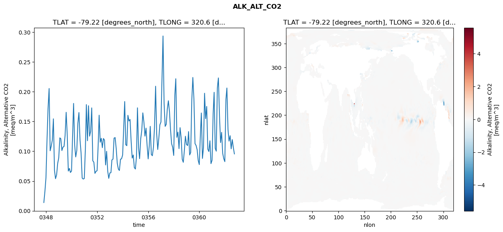
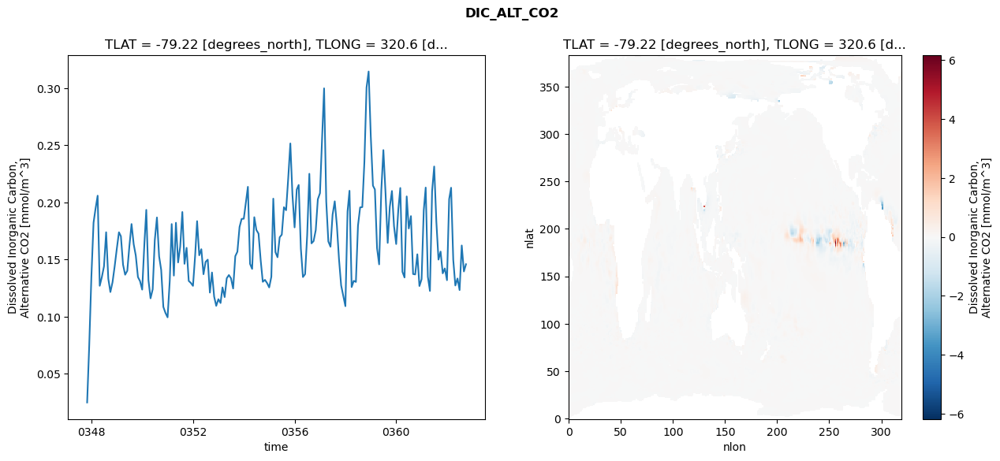
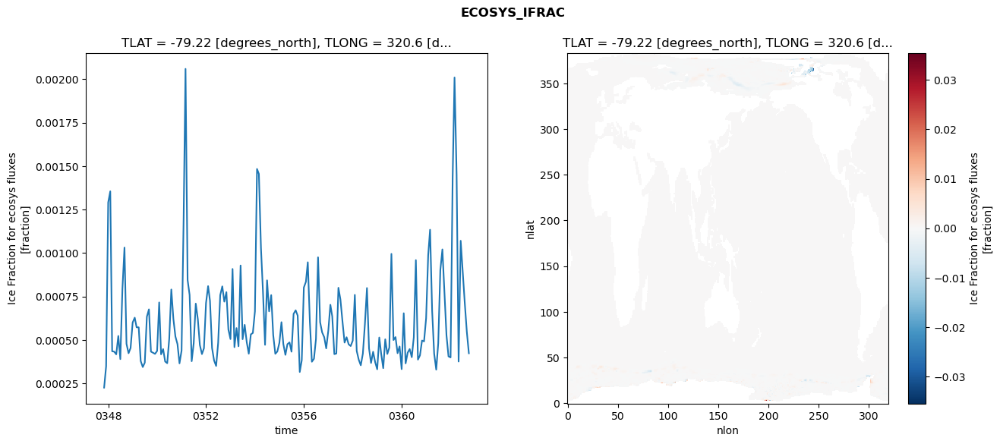
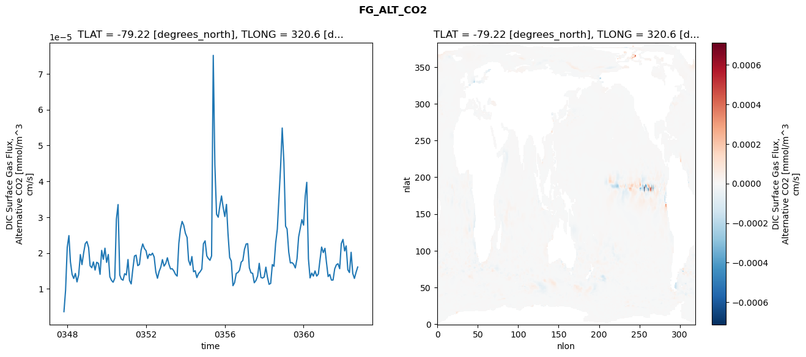

glb-dor_North_Atlantic_basin_020_1999-10-01_00083#
Simulation details#
Case: smyle.cdr-atlas-v0.glb-dor_North_Atlantic_basin_020_1999-10-01_00083.001
Basin: North_Atlantic_basin
Polygon: 20.0
Start date: 1999-10
Show code cell source Hide code cell source
import xarray as xr
import matplotlib.pyplot as plt
Show code cell source Hide code cell source
zarr_store = "/path/to/zarr/store"
# Parameters
zarr_store = "/global/cfs/projectdirs/m4746/Projects/Ocean-CDR-Atlas-v0/data/validation/smyle.cdr-atlas-v0.glb-dor_North_Atlantic_basin_020_1999-10-01_00083.001.validation.zarr"
Show code cell source Hide code cell source
%%time
ds_o = xr.open_zarr(zarr_store).compute()
ds_o
CPU times: user 654 ms, sys: 475 ms, total: 1.13 s
Wall time: 1.34 s
<xarray.Dataset> Size: 2MB
Dimensions: (nlat: 384, nlon: 320, time: 180)
Coordinates:
TLAT float64 8B -79.22
TLONG float64 8B 320.6
ULAT float64 8B -78.95
ULONG float64 8B 321.1
* time (time) object 1kB 0347-11-01 00:00:00 ... 0362-10-01 0...
z_t float32 4B 500.0
Dimensions without coordinates: nlat, nlon
Data variables:
ALK_ALT_CO2_diff (nlat, nlon) float32 492kB nan nan nan ... nan nan nan
ALK_ALT_CO2_rmse (time) float64 1kB 0.01395 0.03202 ... 0.1061 0.09556
DIC_ALT_CO2_diff (nlat, nlon) float32 492kB nan nan nan ... nan nan nan
DIC_ALT_CO2_rmse (time) float64 1kB 0.02483 0.07477 ... 0.1395 0.1458
ECOSYS_IFRAC_diff (nlat, nlon) float32 492kB nan nan nan ... nan nan nan
ECOSYS_IFRAC_rmse (time) float64 1kB 0.0002258 0.0003486 ... 0.0004234
FG_ALT_CO2_diff (nlat, nlon) float32 492kB nan nan nan ... nan nan nan
FG_ALT_CO2_rmse (time) float64 1kB 3.632e-06 9.566e-06 ... 1.609e-05xarray.Dataset
- nlat: 384
- nlon: 320
- time: 180
- TLAT()float64-79.22
- long_name :
- array of t-grid latitudes
- units :
- degrees_north
array(-79.22052261)
- TLONG()float64320.6
- long_name :
- array of t-grid longitudes
- units :
- degrees_east
array(320.56250892)
- ULAT()float64-78.95
- long_name :
- array of u-grid latitudes
- units :
- degrees_north
array(-78.95289509)
- ULONG()float64321.1
- long_name :
- array of u-grid longitudes
- units :
- degrees_east
array(321.12500894)
- time(time)object0347-11-01 00:00:00 ... 0362-10-...
- bounds :
- time_bound
- long_name :
- time
array([cftime.DatetimeNoLeap(347, 11, 1, 0, 0, 0, 0, has_year_zero=True), cftime.DatetimeNoLeap(347, 12, 1, 0, 0, 0, 0, has_year_zero=True), cftime.DatetimeNoLeap(348, 1, 1, 0, 0, 0, 0, has_year_zero=True), cftime.DatetimeNoLeap(348, 2, 1, 0, 0, 0, 0, has_year_zero=True), cftime.DatetimeNoLeap(348, 3, 1, 0, 0, 0, 0, has_year_zero=True), cftime.DatetimeNoLeap(348, 4, 1, 0, 0, 0, 0, has_year_zero=True), cftime.DatetimeNoLeap(348, 5, 1, 0, 0, 0, 0, has_year_zero=True), cftime.DatetimeNoLeap(348, 6, 1, 0, 0, 0, 0, has_year_zero=True), cftime.DatetimeNoLeap(348, 7, 1, 0, 0, 0, 0, has_year_zero=True), cftime.DatetimeNoLeap(348, 8, 1, 0, 0, 0, 0, has_year_zero=True), cftime.DatetimeNoLeap(348, 9, 1, 0, 0, 0, 0, has_year_zero=True), cftime.DatetimeNoLeap(348, 10, 1, 0, 0, 0, 0, has_year_zero=True), cftime.DatetimeNoLeap(348, 11, 1, 0, 0, 0, 0, has_year_zero=True), cftime.DatetimeNoLeap(348, 12, 1, 0, 0, 0, 0, has_year_zero=True), cftime.DatetimeNoLeap(349, 1, 1, 0, 0, 0, 0, has_year_zero=True), cftime.DatetimeNoLeap(349, 2, 1, 0, 0, 0, 0, has_year_zero=True), cftime.DatetimeNoLeap(349, 3, 1, 0, 0, 0, 0, has_year_zero=True), cftime.DatetimeNoLeap(349, 4, 1, 0, 0, 0, 0, has_year_zero=True), cftime.DatetimeNoLeap(349, 5, 1, 0, 0, 0, 0, has_year_zero=True), cftime.DatetimeNoLeap(349, 6, 1, 0, 0, 0, 0, has_year_zero=True), cftime.DatetimeNoLeap(349, 7, 1, 0, 0, 0, 0, has_year_zero=True), cftime.DatetimeNoLeap(349, 8, 1, 0, 0, 0, 0, has_year_zero=True), cftime.DatetimeNoLeap(349, 9, 1, 0, 0, 0, 0, has_year_zero=True), cftime.DatetimeNoLeap(349, 10, 1, 0, 0, 0, 0, has_year_zero=True), cftime.DatetimeNoLeap(349, 11, 1, 0, 0, 0, 0, has_year_zero=True), cftime.DatetimeNoLeap(349, 12, 1, 0, 0, 0, 0, has_year_zero=True), cftime.DatetimeNoLeap(350, 1, 1, 0, 0, 0, 0, has_year_zero=True), cftime.DatetimeNoLeap(350, 2, 1, 0, 0, 0, 0, has_year_zero=True), cftime.DatetimeNoLeap(350, 3, 1, 0, 0, 0, 0, has_year_zero=True), cftime.DatetimeNoLeap(350, 4, 1, 0, 0, 0, 0, has_year_zero=True), cftime.DatetimeNoLeap(350, 5, 1, 0, 0, 0, 0, has_year_zero=True), cftime.DatetimeNoLeap(350, 6, 1, 0, 0, 0, 0, has_year_zero=True), cftime.DatetimeNoLeap(350, 7, 1, 0, 0, 0, 0, has_year_zero=True), cftime.DatetimeNoLeap(350, 8, 1, 0, 0, 0, 0, has_year_zero=True), cftime.DatetimeNoLeap(350, 9, 1, 0, 0, 0, 0, has_year_zero=True), cftime.DatetimeNoLeap(350, 10, 1, 0, 0, 0, 0, has_year_zero=True), cftime.DatetimeNoLeap(350, 11, 1, 0, 0, 0, 0, has_year_zero=True), cftime.DatetimeNoLeap(350, 12, 1, 0, 0, 0, 0, has_year_zero=True), cftime.DatetimeNoLeap(351, 1, 1, 0, 0, 0, 0, has_year_zero=True), cftime.DatetimeNoLeap(351, 2, 1, 0, 0, 0, 0, has_year_zero=True), cftime.DatetimeNoLeap(351, 3, 1, 0, 0, 0, 0, has_year_zero=True), cftime.DatetimeNoLeap(351, 4, 1, 0, 0, 0, 0, has_year_zero=True), cftime.DatetimeNoLeap(351, 5, 1, 0, 0, 0, 0, has_year_zero=True), cftime.DatetimeNoLeap(351, 6, 1, 0, 0, 0, 0, has_year_zero=True), cftime.DatetimeNoLeap(351, 7, 1, 0, 0, 0, 0, has_year_zero=True), cftime.DatetimeNoLeap(351, 8, 1, 0, 0, 0, 0, has_year_zero=True), cftime.DatetimeNoLeap(351, 9, 1, 0, 0, 0, 0, has_year_zero=True), cftime.DatetimeNoLeap(351, 10, 1, 0, 0, 0, 0, has_year_zero=True), cftime.DatetimeNoLeap(351, 11, 1, 0, 0, 0, 0, has_year_zero=True), cftime.DatetimeNoLeap(351, 12, 1, 0, 0, 0, 0, has_year_zero=True), cftime.DatetimeNoLeap(352, 1, 1, 0, 0, 0, 0, has_year_zero=True), cftime.DatetimeNoLeap(352, 2, 1, 0, 0, 0, 0, has_year_zero=True), cftime.DatetimeNoLeap(352, 3, 1, 0, 0, 0, 0, has_year_zero=True), cftime.DatetimeNoLeap(352, 4, 1, 0, 0, 0, 0, has_year_zero=True), cftime.DatetimeNoLeap(352, 5, 1, 0, 0, 0, 0, has_year_zero=True), cftime.DatetimeNoLeap(352, 6, 1, 0, 0, 0, 0, has_year_zero=True), cftime.DatetimeNoLeap(352, 7, 1, 0, 0, 0, 0, has_year_zero=True), cftime.DatetimeNoLeap(352, 8, 1, 0, 0, 0, 0, has_year_zero=True), cftime.DatetimeNoLeap(352, 9, 1, 0, 0, 0, 0, has_year_zero=True), cftime.DatetimeNoLeap(352, 10, 1, 0, 0, 0, 0, has_year_zero=True), cftime.DatetimeNoLeap(352, 11, 1, 0, 0, 0, 0, has_year_zero=True), cftime.DatetimeNoLeap(352, 12, 1, 0, 0, 0, 0, has_year_zero=True), cftime.DatetimeNoLeap(353, 1, 1, 0, 0, 0, 0, has_year_zero=True), cftime.DatetimeNoLeap(353, 2, 1, 0, 0, 0, 0, has_year_zero=True), cftime.DatetimeNoLeap(353, 3, 1, 0, 0, 0, 0, has_year_zero=True), cftime.DatetimeNoLeap(353, 4, 1, 0, 0, 0, 0, has_year_zero=True), cftime.DatetimeNoLeap(353, 5, 1, 0, 0, 0, 0, has_year_zero=True), cftime.DatetimeNoLeap(353, 6, 1, 0, 0, 0, 0, has_year_zero=True), cftime.DatetimeNoLeap(353, 7, 1, 0, 0, 0, 0, has_year_zero=True), cftime.DatetimeNoLeap(353, 8, 1, 0, 0, 0, 0, has_year_zero=True), cftime.DatetimeNoLeap(353, 9, 1, 0, 0, 0, 0, has_year_zero=True), cftime.DatetimeNoLeap(353, 10, 1, 0, 0, 0, 0, has_year_zero=True), cftime.DatetimeNoLeap(353, 11, 1, 0, 0, 0, 0, has_year_zero=True), cftime.DatetimeNoLeap(353, 12, 1, 0, 0, 0, 0, has_year_zero=True), cftime.DatetimeNoLeap(354, 1, 1, 0, 0, 0, 0, has_year_zero=True), cftime.DatetimeNoLeap(354, 2, 1, 0, 0, 0, 0, has_year_zero=True), cftime.DatetimeNoLeap(354, 3, 1, 0, 0, 0, 0, has_year_zero=True), cftime.DatetimeNoLeap(354, 4, 1, 0, 0, 0, 0, has_year_zero=True), cftime.DatetimeNoLeap(354, 5, 1, 0, 0, 0, 0, has_year_zero=True), cftime.DatetimeNoLeap(354, 6, 1, 0, 0, 0, 0, has_year_zero=True), cftime.DatetimeNoLeap(354, 7, 1, 0, 0, 0, 0, has_year_zero=True), cftime.DatetimeNoLeap(354, 8, 1, 0, 0, 0, 0, has_year_zero=True), cftime.DatetimeNoLeap(354, 9, 1, 0, 0, 0, 0, has_year_zero=True), cftime.DatetimeNoLeap(354, 10, 1, 0, 0, 0, 0, has_year_zero=True), cftime.DatetimeNoLeap(354, 11, 1, 0, 0, 0, 0, has_year_zero=True), cftime.DatetimeNoLeap(354, 12, 1, 0, 0, 0, 0, has_year_zero=True), cftime.DatetimeNoLeap(355, 1, 1, 0, 0, 0, 0, has_year_zero=True), cftime.DatetimeNoLeap(355, 2, 1, 0, 0, 0, 0, has_year_zero=True), cftime.DatetimeNoLeap(355, 3, 1, 0, 0, 0, 0, has_year_zero=True), cftime.DatetimeNoLeap(355, 4, 1, 0, 0, 0, 0, has_year_zero=True), cftime.DatetimeNoLeap(355, 5, 1, 0, 0, 0, 0, has_year_zero=True), cftime.DatetimeNoLeap(355, 6, 1, 0, 0, 0, 0, has_year_zero=True), cftime.DatetimeNoLeap(355, 7, 1, 0, 0, 0, 0, has_year_zero=True), cftime.DatetimeNoLeap(355, 8, 1, 0, 0, 0, 0, has_year_zero=True), cftime.DatetimeNoLeap(355, 9, 1, 0, 0, 0, 0, has_year_zero=True), cftime.DatetimeNoLeap(355, 10, 1, 0, 0, 0, 0, has_year_zero=True), cftime.DatetimeNoLeap(355, 11, 1, 0, 0, 0, 0, has_year_zero=True), cftime.DatetimeNoLeap(355, 12, 1, 0, 0, 0, 0, has_year_zero=True), cftime.DatetimeNoLeap(356, 1, 1, 0, 0, 0, 0, has_year_zero=True), cftime.DatetimeNoLeap(356, 2, 1, 0, 0, 0, 0, has_year_zero=True), cftime.DatetimeNoLeap(356, 3, 1, 0, 0, 0, 0, has_year_zero=True), cftime.DatetimeNoLeap(356, 4, 1, 0, 0, 0, 0, has_year_zero=True), cftime.DatetimeNoLeap(356, 5, 1, 0, 0, 0, 0, has_year_zero=True), cftime.DatetimeNoLeap(356, 6, 1, 0, 0, 0, 0, has_year_zero=True), cftime.DatetimeNoLeap(356, 7, 1, 0, 0, 0, 0, has_year_zero=True), cftime.DatetimeNoLeap(356, 8, 1, 0, 0, 0, 0, has_year_zero=True), cftime.DatetimeNoLeap(356, 9, 1, 0, 0, 0, 0, has_year_zero=True), cftime.DatetimeNoLeap(356, 10, 1, 0, 0, 0, 0, has_year_zero=True), cftime.DatetimeNoLeap(356, 11, 1, 0, 0, 0, 0, has_year_zero=True), cftime.DatetimeNoLeap(356, 12, 1, 0, 0, 0, 0, has_year_zero=True), cftime.DatetimeNoLeap(357, 1, 1, 0, 0, 0, 0, has_year_zero=True), cftime.DatetimeNoLeap(357, 2, 1, 0, 0, 0, 0, has_year_zero=True), cftime.DatetimeNoLeap(357, 3, 1, 0, 0, 0, 0, has_year_zero=True), cftime.DatetimeNoLeap(357, 4, 1, 0, 0, 0, 0, has_year_zero=True), cftime.DatetimeNoLeap(357, 5, 1, 0, 0, 0, 0, has_year_zero=True), cftime.DatetimeNoLeap(357, 6, 1, 0, 0, 0, 0, has_year_zero=True), cftime.DatetimeNoLeap(357, 7, 1, 0, 0, 0, 0, has_year_zero=True), cftime.DatetimeNoLeap(357, 8, 1, 0, 0, 0, 0, has_year_zero=True), cftime.DatetimeNoLeap(357, 9, 1, 0, 0, 0, 0, has_year_zero=True), cftime.DatetimeNoLeap(357, 10, 1, 0, 0, 0, 0, has_year_zero=True), cftime.DatetimeNoLeap(357, 11, 1, 0, 0, 0, 0, has_year_zero=True), cftime.DatetimeNoLeap(357, 12, 1, 0, 0, 0, 0, has_year_zero=True), cftime.DatetimeNoLeap(358, 1, 1, 0, 0, 0, 0, has_year_zero=True), cftime.DatetimeNoLeap(358, 2, 1, 0, 0, 0, 0, has_year_zero=True), cftime.DatetimeNoLeap(358, 3, 1, 0, 0, 0, 0, has_year_zero=True), cftime.DatetimeNoLeap(358, 4, 1, 0, 0, 0, 0, has_year_zero=True), cftime.DatetimeNoLeap(358, 5, 1, 0, 0, 0, 0, has_year_zero=True), cftime.DatetimeNoLeap(358, 6, 1, 0, 0, 0, 0, has_year_zero=True), cftime.DatetimeNoLeap(358, 7, 1, 0, 0, 0, 0, has_year_zero=True), cftime.DatetimeNoLeap(358, 8, 1, 0, 0, 0, 0, has_year_zero=True), cftime.DatetimeNoLeap(358, 9, 1, 0, 0, 0, 0, has_year_zero=True), cftime.DatetimeNoLeap(358, 10, 1, 0, 0, 0, 0, has_year_zero=True), cftime.DatetimeNoLeap(358, 11, 1, 0, 0, 0, 0, has_year_zero=True), cftime.DatetimeNoLeap(358, 12, 1, 0, 0, 0, 0, has_year_zero=True), cftime.DatetimeNoLeap(359, 1, 1, 0, 0, 0, 0, has_year_zero=True), cftime.DatetimeNoLeap(359, 2, 1, 0, 0, 0, 0, has_year_zero=True), cftime.DatetimeNoLeap(359, 3, 1, 0, 0, 0, 0, has_year_zero=True), cftime.DatetimeNoLeap(359, 4, 1, 0, 0, 0, 0, has_year_zero=True), cftime.DatetimeNoLeap(359, 5, 1, 0, 0, 0, 0, has_year_zero=True), cftime.DatetimeNoLeap(359, 6, 1, 0, 0, 0, 0, has_year_zero=True), cftime.DatetimeNoLeap(359, 7, 1, 0, 0, 0, 0, has_year_zero=True), cftime.DatetimeNoLeap(359, 8, 1, 0, 0, 0, 0, has_year_zero=True), cftime.DatetimeNoLeap(359, 9, 1, 0, 0, 0, 0, has_year_zero=True), cftime.DatetimeNoLeap(359, 10, 1, 0, 0, 0, 0, has_year_zero=True), cftime.DatetimeNoLeap(359, 11, 1, 0, 0, 0, 0, has_year_zero=True), cftime.DatetimeNoLeap(359, 12, 1, 0, 0, 0, 0, has_year_zero=True), cftime.DatetimeNoLeap(360, 1, 1, 0, 0, 0, 0, has_year_zero=True), cftime.DatetimeNoLeap(360, 2, 1, 0, 0, 0, 0, has_year_zero=True), cftime.DatetimeNoLeap(360, 3, 1, 0, 0, 0, 0, has_year_zero=True), cftime.DatetimeNoLeap(360, 4, 1, 0, 0, 0, 0, has_year_zero=True), cftime.DatetimeNoLeap(360, 5, 1, 0, 0, 0, 0, has_year_zero=True), cftime.DatetimeNoLeap(360, 6, 1, 0, 0, 0, 0, has_year_zero=True), cftime.DatetimeNoLeap(360, 7, 1, 0, 0, 0, 0, has_year_zero=True), cftime.DatetimeNoLeap(360, 8, 1, 0, 0, 0, 0, has_year_zero=True), cftime.DatetimeNoLeap(360, 9, 1, 0, 0, 0, 0, has_year_zero=True), cftime.DatetimeNoLeap(360, 10, 1, 0, 0, 0, 0, has_year_zero=True), cftime.DatetimeNoLeap(360, 11, 1, 0, 0, 0, 0, has_year_zero=True), cftime.DatetimeNoLeap(360, 12, 1, 0, 0, 0, 0, has_year_zero=True), cftime.DatetimeNoLeap(361, 1, 1, 0, 0, 0, 0, has_year_zero=True), cftime.DatetimeNoLeap(361, 2, 1, 0, 0, 0, 0, has_year_zero=True), cftime.DatetimeNoLeap(361, 3, 1, 0, 0, 0, 0, has_year_zero=True), cftime.DatetimeNoLeap(361, 4, 1, 0, 0, 0, 0, has_year_zero=True), cftime.DatetimeNoLeap(361, 5, 1, 0, 0, 0, 0, has_year_zero=True), cftime.DatetimeNoLeap(361, 6, 1, 0, 0, 0, 0, has_year_zero=True), cftime.DatetimeNoLeap(361, 7, 1, 0, 0, 0, 0, has_year_zero=True), cftime.DatetimeNoLeap(361, 8, 1, 0, 0, 0, 0, has_year_zero=True), cftime.DatetimeNoLeap(361, 9, 1, 0, 0, 0, 0, has_year_zero=True), cftime.DatetimeNoLeap(361, 10, 1, 0, 0, 0, 0, has_year_zero=True), cftime.DatetimeNoLeap(361, 11, 1, 0, 0, 0, 0, has_year_zero=True), cftime.DatetimeNoLeap(361, 12, 1, 0, 0, 0, 0, has_year_zero=True), cftime.DatetimeNoLeap(362, 1, 1, 0, 0, 0, 0, has_year_zero=True), cftime.DatetimeNoLeap(362, 2, 1, 0, 0, 0, 0, has_year_zero=True), cftime.DatetimeNoLeap(362, 3, 1, 0, 0, 0, 0, has_year_zero=True), cftime.DatetimeNoLeap(362, 4, 1, 0, 0, 0, 0, has_year_zero=True), cftime.DatetimeNoLeap(362, 5, 1, 0, 0, 0, 0, has_year_zero=True), cftime.DatetimeNoLeap(362, 6, 1, 0, 0, 0, 0, has_year_zero=True), cftime.DatetimeNoLeap(362, 7, 1, 0, 0, 0, 0, has_year_zero=True), cftime.DatetimeNoLeap(362, 8, 1, 0, 0, 0, 0, has_year_zero=True), cftime.DatetimeNoLeap(362, 9, 1, 0, 0, 0, 0, has_year_zero=True), cftime.DatetimeNoLeap(362, 10, 1, 0, 0, 0, 0, has_year_zero=True)], dtype=object) - z_t()float32500.0
- long_name :
- depth from surface to midpoint of layer
- positive :
- down
- units :
- centimeters
- valid_max :
- 537500.0
- valid_min :
- 500.0
array(500., dtype=float32)
- ALK_ALT_CO2_diff(nlat, nlon)float32nan nan nan nan ... nan nan nan nan
- cell_methods :
- time: mean
- grid_loc :
- 3111
- long_name :
- Alkalinity, Alternative CO2
- units :
- meq/m^3
array([[ nan, nan, nan, ..., nan, nan, nan], [ nan, nan, nan, ..., nan, nan, nan], [0.02856445, 0.06079102, 0.01318359, ..., nan, nan, nan], ..., [ nan, nan, nan, ..., nan, nan, nan], [ nan, nan, nan, ..., nan, nan, nan], [ nan, nan, nan, ..., nan, nan, nan]], dtype=float32) - ALK_ALT_CO2_rmse(time)float640.01395 0.03202 ... 0.1061 0.09556
- cell_methods :
- time: mean
- grid_loc :
- 3111
- long_name :
- Alkalinity, Alternative CO2
- units :
- meq/m^3
array([0.01395493, 0.0320204 , 0.05570566, 0.1212618 , 0.17149869, 0.20530559, 0.10082713, 0.10879134, 0.11841564, 0.154426 , 0.06834544, 0.05399604, 0.06038535, 0.0794278 , 0.08904593, 0.12247512, 0.12110601, 0.10117466, 0.10691397, 0.10807842, 0.12630631, 0.1653952 , 0.12725116, 0.06674488, 0.07125615, 0.06442021, 0.06677779, 0.12718208, 0.1802802 , 0.11023479, 0.09051122, 0.1013861 , 0.14682548, 0.16496942, 0.11844207, 0.09721532, 0.05505616, 0.05337148, 0.05427462, 0.10450211, 0.17828633, 0.11764411, 0.17638677, 0.12531548, 0.13348618, 0.17278574, 0.08399742, 0.08173079, 0.06291025, 0.06623489, 0.06736224, 0.10947192, 0.16050219, 0.11517792, 0.12179729, 0.10602882, 0.12139864, 0.11875572, 0.07702743, 0.09997857, 0.06677224, 0.0545339 , 0.06366922, 0.064093 , 0.0855301 , 0.0867828 , 0.12201322, 0.12296887, 0.10482508, 0.07984141, 0.07011621, 0.06770596, 0.08667979, 0.08732373, 0.09369394, 0.13980703, 0.18343632, 0.11096058, 0.10935505, 0.16034123, 0.15077652, 0.15337999, 0.11705678, 0.08852562, 0.09379138, 0.0726606 , 0.070168 , 0.09123989, 0.17289184, 0.10590054, 0.08755809, 0.12053422, 0.13452675, 0.16442612, 0.14887283, 0.12537436, 0.138846 , 0.10982067, 0.08716806, 0.10951085, 0.14181939, 0.09451523, 0.09252041, 0.10690324, 0.14125013, 0.2091151 , 0.12926416, 0.10295912, 0.12207359, 0.14432596, 0.14908967, 0.22587132, 0.29341394, 0.17996071, 0.14172652, 0.14518204, 0.17050282, 0.18474856, 0.16670599, 0.13667333, 0.11271846, 0.10679217, 0.09295989, 0.19379416, 0.22166501, 0.123364 , 0.13220765, 0.10443679, 0.13960582, 0.12289854, 0.08657469, 0.08145317, 0.10161624, 0.12522366, 0.11141925, 0.10959645, 0.13303996, 0.09376624, 0.09800321, 0.18595984, 0.22382763, 0.18722194, 0.11277304, 0.10982994, 0.10263261, 0.08475924, 0.07763262, 0.12718502, 0.16419818, 0.08795471, 0.10581077, 0.19735308, 0.15472005, 0.17521281, 0.10361472, 0.09958593, 0.11759548, 0.07921011, 0.08493876, 0.16322736, 0.1989122 , 0.10492322, 0.10012299, 0.2064064 , 0.22305943, 0.15996159, 0.11460388, 0.13180995, 0.09656336, 0.08761372, 0.08255842, 0.18707573, 0.20611762, 0.1368465 , 0.11707317, 0.12608122, 0.10407534, 0.11956809, 0.10611562, 0.09555775]) - DIC_ALT_CO2_diff(nlat, nlon)float32nan nan nan nan ... nan nan nan nan
- cell_methods :
- time: mean
- grid_loc :
- 3111
- long_name :
- Dissolved Inorganic Carbon, Alternative CO2
- units :
- mmol/m^3
array([[ nan, nan, nan, ..., nan, nan, nan], [ nan, nan, nan, ..., nan, nan, nan], [0.02514648, 0.05834961, 0.01318359, ..., nan, nan, nan], ..., [ nan, nan, nan, ..., nan, nan, nan], [ nan, nan, nan, ..., nan, nan, nan], [ nan, nan, nan, ..., nan, nan, nan]], dtype=float32) - DIC_ALT_CO2_rmse(time)float640.02483 0.07477 ... 0.1395 0.1458
- cell_methods :
- time: mean
- grid_loc :
- 3111
- long_name :
- Dissolved Inorganic Carbon, Alternative CO2
- units :
- mmol/m^3
array([0.02482858, 0.07476982, 0.13512603, 0.18222232, 0.1942269 , 0.20586677, 0.12699792, 0.13478239, 0.14397772, 0.17386706, 0.13316388, 0.12150604, 0.13017818, 0.1437879 , 0.15926142, 0.17384829, 0.17036934, 0.14544541, 0.13669537, 0.14011911, 0.16171345, 0.18105322, 0.16335358, 0.15345247, 0.13463014, 0.13107287, 0.12364451, 0.16314212, 0.19345558, 0.132048 , 0.11598683, 0.12392098, 0.16693347, 0.18680134, 0.1528068 , 0.14092818, 0.10850465, 0.10329841, 0.09936161, 0.13114101, 0.181044 , 0.13591206, 0.1821628 , 0.14743383, 0.16107208, 0.19158911, 0.14621741, 0.16021626, 0.13123248, 0.12951483, 0.12690402, 0.15349381, 0.18359783, 0.15368769, 0.15903732, 0.13712602, 0.14792781, 0.14986473, 0.12102602, 0.13862385, 0.11751274, 0.10943339, 0.11524787, 0.11188777, 0.1255573 , 0.11711278, 0.13355959, 0.13638456, 0.13357233, 0.12461348, 0.15293205, 0.15679619, 0.17848085, 0.1855393 , 0.18570349, 0.20007601, 0.21363377, 0.14615298, 0.14174941, 0.18702654, 0.1758596 , 0.1726391 , 0.14922763, 0.13047589, 0.13218586, 0.12944824, 0.1255644 , 0.13490858, 0.20328238, 0.15640769, 0.15197293, 0.16947871, 0.17174467, 0.19580181, 0.19313712, 0.22068111, 0.25160754, 0.20673146, 0.17812007, 0.21127337, 0.21527632, 0.15960348, 0.13464194, 0.13717937, 0.17127107, 0.22505697, 0.1641397 , 0.1661138 , 0.17570177, 0.20274189, 0.20809647, 0.25739195, 0.29984311, 0.20073682, 0.16583034, 0.16118872, 0.18924596, 0.20094108, 0.17974602, 0.15043895, 0.12732991, 0.11849027, 0.10914273, 0.19205843, 0.21019192, 0.12585641, 0.13133019, 0.13035579, 0.17965792, 0.19560773, 0.19589598, 0.23537736, 0.30056178, 0.31460879, 0.25778905, 0.21468628, 0.21133027, 0.15995037, 0.14574191, 0.21035032, 0.24580345, 0.20800273, 0.16453945, 0.1960891 , 0.20997696, 0.1791066 , 0.16354901, 0.19414233, 0.21262099, 0.13919927, 0.13425239, 0.20523922, 0.17716984, 0.18798179, 0.13728665, 0.13692869, 0.15457269, 0.12675967, 0.13275814, 0.19300372, 0.21298107, 0.13486951, 0.12247531, 0.20977179, 0.2314227 , 0.18320642, 0.14993517, 0.15695418, 0.13787015, 0.14221172, 0.13189075, 0.20282528, 0.21283006, 0.14970692, 0.12723029, 0.13337973, 0.12324682, 0.16228774, 0.1395237 , 0.14584902]) - ECOSYS_IFRAC_diff(nlat, nlon)float32nan nan nan nan ... nan nan nan nan
- cell_methods :
- time: mean
- grid_loc :
- 2110
- long_name :
- Ice Fraction for ecosys fluxes
- units :
- fraction
array([[ nan, nan, nan, ..., nan, nan, nan], [ nan, nan, nan, ..., nan, nan, nan], [-1.0728836e-06, 3.0398369e-06, -1.2516975e-06, ..., nan, nan, nan], ..., [ nan, nan, nan, ..., nan, nan, nan], [ nan, nan, nan, ..., nan, nan, nan], [ nan, nan, nan, ..., nan, nan, nan]], dtype=float32) - ECOSYS_IFRAC_rmse(time)float640.0002258 0.0003486 ... 0.0004234
- cell_methods :
- time: mean
- grid_loc :
- 2110
- long_name :
- Ice Fraction for ecosys fluxes
- units :
- fraction
array([0.00022581, 0.00034862, 0.00129079, 0.00135498, 0.00043495, 0.00043254, 0.00041717, 0.00052287, 0.00038979, 0.00079184, 0.00103148, 0.00047772, 0.00042358, 0.00045364, 0.00060039, 0.00062819, 0.0005728 , 0.00057262, 0.00037894, 0.00034413, 0.00036964, 0.00063368, 0.00067597, 0.00043295, 0.00042608, 0.00041994, 0.00043682, 0.00071583, 0.0004172 , 0.00044755, 0.0003759 , 0.00036626, 0.00050736, 0.00079023, 0.00062092, 0.00051999, 0.00047586, 0.00036533, 0.00043864, 0.0012036 , 0.00205921, 0.00084526, 0.00075884, 0.00037772, 0.00048079, 0.00070904, 0.00061883, 0.00047087, 0.00041865, 0.00045223, 0.00071246, 0.00080949, 0.00072546, 0.00045353, 0.00038223, 0.00035038, 0.00048285, 0.00075768, 0.00080828, 0.00072038, 0.00077508, 0.00055939, 0.00050515, 0.00090838, 0.00045847, 0.00056832, 0.00046366, 0.00092835, 0.00050428, 0.00058694, 0.00048655, 0.00042094, 0.00053213, 0.00054019, 0.00066476, 0.0014836 , 0.00145504, 0.00102883, 0.0007774 , 0.0004719 , 0.00084291, 0.00066466, 0.00075796, 0.00052763, 0.00042031, 0.00043334, 0.00048342, 0.00060216, 0.00047652, 0.00041417, 0.00047575, 0.00048576, 0.00043249, 0.00065002, 0.00067059, 0.00064004, 0.00031576, 0.00038342, 0.00080144, 0.00083488, 0.00094679, 0.0006038 , 0.00037466, 0.00039187, 0.00050563, 0.00097541, 0.00060193, 0.00054361, 0.00051618, 0.00045164, 0.00055311, 0.0007022 , 0.00063553, 0.00041833, 0.00042196, 0.00080019, 0.00073303, 0.00060548, 0.00048494, 0.00051565, 0.00047492, 0.00046502, 0.00049627, 0.00075934, 0.00043683, 0.00038547, 0.00035418, 0.00042159, 0.00058936, 0.00079869, 0.0004509 , 0.00036773, 0.00043222, 0.00037282, 0.00033128, 0.00051408, 0.00042116, 0.00033774, 0.00050369, 0.00041949, 0.00045622, 0.00099506, 0.00049936, 0.00051653, 0.00042379, 0.00046269, 0.00033226, 0.00065364, 0.00036533, 0.00042714, 0.00044763, 0.00040065, 0.00051557, 0.00095924, 0.00038691, 0.00041105, 0.00049675, 0.00049153, 0.00062501, 0.00098812, 0.00113402, 0.00066627, 0.00042134, 0.00032917, 0.00048133, 0.00090104, 0.00102075, 0.00077568, 0.0005268 , 0.00040566, 0.00039943, 0.00143265, 0.00200968, 0.00145073, 0.00037586, 0.00107049, 0.00089154, 0.00071222, 0.00054488, 0.0004234 ]) - FG_ALT_CO2_diff(nlat, nlon)float32nan nan nan nan ... nan nan nan nan
- cell_methods :
- time: mean
- grid_loc :
- 2110
- long_name :
- DIC Surface Gas Flux, Alternative CO2
- units :
- mmol/m^3 cm/s
array([[ nan, nan, nan, ..., nan, nan, nan], [ nan, nan, nan, ..., nan, nan, nan], [-3.1117509e-09, -5.2882285e-09, -2.3931612e-09, ..., nan, nan, nan], ..., [ nan, nan, nan, ..., nan, nan, nan], [ nan, nan, nan, ..., nan, nan, nan], [ nan, nan, nan, ..., nan, nan, nan]], dtype=float32) - FG_ALT_CO2_rmse(time)float643.632e-06 9.566e-06 ... 1.609e-05
- cell_methods :
- time: mean
- grid_loc :
- 2110
- long_name :
- DIC Surface Gas Flux, Alternative CO2
- units :
- mmol/m^3 cm/s
array([3.63196900e-06, 9.56636709e-06, 2.15857221e-05, 2.48510274e-05, 1.75563611e-05, 1.40350234e-05, 1.28951723e-05, 1.42893715e-05, 1.19339097e-05, 1.39164395e-05, 1.95599586e-05, 1.67645146e-05, 2.00133536e-05, 2.25966206e-05, 2.31966236e-05, 2.15306808e-05, 1.64251626e-05, 1.58958000e-05, 1.75076856e-05, 1.52325944e-05, 1.74086475e-05, 1.71175921e-05, 1.40502254e-05, 2.07275536e-05, 1.82304528e-05, 2.13397442e-05, 1.73881428e-05, 1.95773175e-05, 1.33829361e-05, 1.23636134e-05, 1.18449882e-05, 1.29215522e-05, 2.94604290e-05, 3.35091828e-05, 1.38542741e-05, 1.27024055e-05, 1.24143359e-05, 1.42226003e-05, 1.38897431e-05, 1.81787534e-05, 1.23452296e-05, 1.13726731e-05, 1.54460439e-05, 1.91538089e-05, 1.93905936e-05, 1.64748808e-05, 1.67993875e-05, 2.07532950e-05, 2.25297575e-05, 2.12727685e-05, 2.06430052e-05, 1.84669158e-05, 1.96813449e-05, 1.93903029e-05, 1.99457635e-05, 1.88746112e-05, 1.47507538e-05, 1.29552743e-05, 1.48633506e-05, 1.60251648e-05, 1.81543607e-05, 1.63489200e-05, 1.70579425e-05, 1.86703456e-05, 1.68845656e-05, 1.55536540e-05, 1.56244774e-05, 1.49840992e-05, 1.40358001e-05, 1.35541532e-05, 2.26776056e-05, 2.66849218e-05, 2.88075697e-05, 2.77266491e-05, 2.54919090e-05, 2.43449019e-05, 1.79801072e-05, 1.65832990e-05, 1.90048331e-05, 1.47821044e-05, ... 2.54505398e-05, 1.87644198e-05, 1.77488573e-05, 1.08788785e-05, 1.17194820e-05, 1.42980301e-05, 1.45576947e-05, 1.52065094e-05, 1.74603927e-05, 1.78981342e-05, 2.10599920e-05, 2.25277337e-05, 2.26006211e-05, 1.58606866e-05, 1.44763001e-05, 1.43278216e-05, 1.16980251e-05, 1.23258731e-05, 1.35854886e-05, 1.71156257e-05, 1.31874975e-05, 1.30066813e-05, 1.33028185e-05, 1.60528411e-05, 1.33617485e-05, 1.12630171e-05, 1.15219999e-05, 1.67863747e-05, 1.62939360e-05, 2.27245356e-05, 2.66254948e-05, 3.50369955e-05, 4.40733340e-05, 5.48672272e-05, 4.53921791e-05, 2.74908024e-05, 2.66952191e-05, 2.02452065e-05, 1.72346638e-05, 1.73216826e-05, 1.68677826e-05, 1.58308340e-05, 1.83999090e-05, 2.44669861e-05, 2.68816145e-05, 2.93082590e-05, 2.77728007e-05, 3.59699018e-05, 3.97155476e-05, 1.83692219e-05, 1.30475224e-05, 1.44013829e-05, 1.35511846e-05, 1.49979030e-05, 1.35598280e-05, 1.41282752e-05, 1.80481788e-05, 2.16621351e-05, 2.01095574e-05, 2.13025832e-05, 1.73712722e-05, 1.34193549e-05, 1.40307893e-05, 1.24457374e-05, 1.24580311e-05, 1.55883815e-05, 1.67128357e-05, 1.70140584e-05, 1.56224362e-05, 2.26423378e-05, 2.37848584e-05, 2.05704175e-05, 2.19763224e-05, 1.53243635e-05, 1.45486041e-05, 2.01979550e-05, 1.43108513e-05, 1.29097805e-05, 1.46415094e-05, 1.60883677e-05])
- timePandasIndex
PandasIndex(CFTimeIndex([0347-11-01 00:00:00, 0347-12-01 00:00:00, 0348-01-01 00:00:00, 0348-02-01 00:00:00, 0348-03-01 00:00:00, 0348-04-01 00:00:00, 0348-05-01 00:00:00, 0348-06-01 00:00:00, 0348-07-01 00:00:00, 0348-08-01 00:00:00, ... 0362-01-01 00:00:00, 0362-02-01 00:00:00, 0362-03-01 00:00:00, 0362-04-01 00:00:00, 0362-05-01 00:00:00, 0362-06-01 00:00:00, 0362-07-01 00:00:00, 0362-08-01 00:00:00, 0362-09-01 00:00:00, 0362-10-01 00:00:00], dtype='object', length=180, calendar='noleap', freq='MS'))
Show code cell source Hide code cell source
variables = [v[:-5] for v in ds_o.variables if "_rmse" in v]
Show code cell source Hide code cell source
plt.rcParams.update({'figure.max_open_warning': 0})
for v in variables:
fig, axs = plt.subplots(1, 2, figsize=(15, 6))
ds_o[f"{v}_rmse"].plot(ax=axs[0])
ds_o[f"{v}_diff"].plot(ax=axs[1])
plt.suptitle(v, fontweight="bold")



